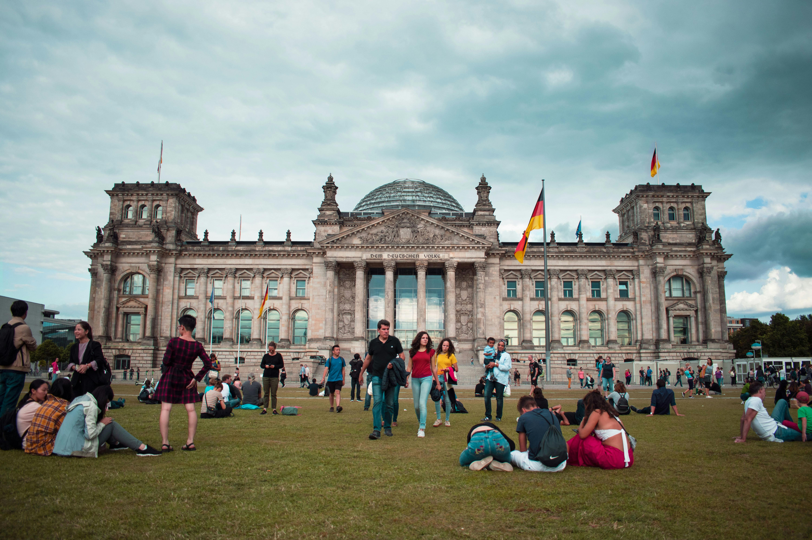

Paris, França
Paris, a cidade das luzes, é famosa por seus monumentos icônicos como a Torre Eiffel, o Museu do Louvre e a Catedral de Notre-Dame.

Roma, Itália
Roma é uma cidade rica em história, com pontos turísticos como o Coliseu, o Pantheon e o Vaticano.

Santorini, Grécia
Santorini é famosa por suas vistas deslumbrantes, vilas brancas e praias de águas cristalinas.

Berlim, Alemanha
Berlim, a vibrante capital da Alemanha, é uma mistura fascinante de história, cultura e modernidade. De seus monumentos icônicos, como o Portão de Brandemburgo e a East Side Gallery, aos animados bairros cheios de arte de rua e vida noturna, Berlim cativa visitantes de todo o mundo."